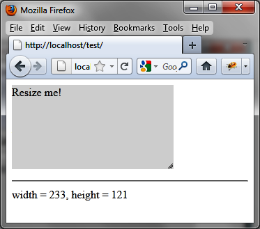
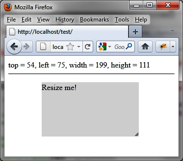
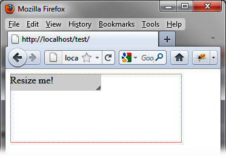
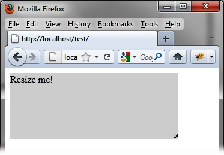
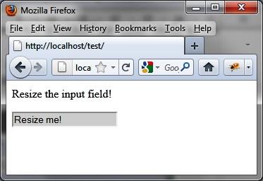
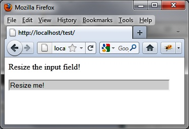
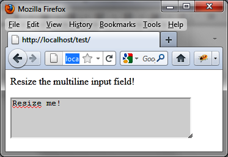

{% include JB/setup %}
{% raw %}
<div>
<div class="book" title="Examples of Using the Resizing Mechanism"><div class="book"><div class="book"><div class="book"><h1 class="title2"><a id="examples_of_using_the_resizing_mechanism" class="calibre1"></a>Examples of Using the Resizing Mechanism</h1></div></div></div><p class="calibre7">Now that you understand how to use the resizing mechanism, let’s
    look at some resizing examples.</p><div class="book" title="Displaying Dimensions of the Element When Resizing"><div class="book"><div class="book"><div class="book"><h2 class="title5"><a id="displaying_dimensions_of_the_element_whe" class="calibre1"></a>Displaying Dimensions of the Element When Resizing</h2></div></div></div><p class="calibre7">We can use the <code class="literal">resize</code> event to
      determine the effect of every mouse movement during a resizing operation
      (see <a class="ulink" href="ch13s05.html#displaying_element_dimensions_when_resiz" title="Figure 13-3. Displaying element dimensions when resizing">Figure 13-3</a>):</p><div class="book"><div class="figure"><a id="displaying_element_dimensions_when_resiz" class="firstname"></a><div class="book"><div class="book"><a id="I_mediaobject13_d1e13225" class="firstname"></a></div></div><p class="title4">Figure 13-3. Displaying element dimensions when resizing</p></div></div><a id="I_programlisting13_d1e13230" class="firstname"></a><pre class="programlisting">&lt;script src = jquery.js&gt;&lt;/script&gt;
&lt;script src = jqueryui/js/jquery-ui-1.8.16.custom.min.js&gt;&lt;/script&gt;

&lt;link rel=stylesheet type=text/css
      href=jqueryui/css/smoothness/jquery-ui-1.8.16.custom.css /&gt;

&lt;p style="background-color:gainsboro;width:150px;"&gt;
     Resize me!
&lt;/p&gt;

&lt;hr /&gt;

&lt;span id=result&gt;&lt;/span&gt;

&lt;script&gt;

<span class="firstname"><strong class="userinput">$("p").resizable ({</strong></span>
  <span class="firstname"><strong class="userinput">resize : function (event, ui)</strong></span>
  <span class="firstname"><strong class="userinput">{</strong></span>
    <span class="firstname"><strong class="userinput">$("#result").text ("width = " + ui.size.width +</strong></span>
                    <span class="firstname"><strong class="userinput">", height = " + ui.size.height);</strong></span>
  <span class="firstname"><strong class="userinput">}</strong></span>
<span class="firstname"><strong class="userinput">});</strong></span>

&lt;/script&gt;</pre></div><div class="book" title="Displaying the Position of the Element When Resizing"><div class="book"><div class="book"><div class="book"><h2 class="title5"><a id="displaying_the_position_of_the_element_w" class="calibre1"></a>Displaying the Position of the Element When Resizing</h2></div></div></div><p class="calibre7">The position of the element is normally fixed on the page.
      However, this position may change if the element is scaled by its top or
      left sides. This implies that its <code class="literal">top</code>
      and <code class="literal">left</code> coordinates are then
      modified, therefore, its position on the page changes. Use the following
      to display position coordinates during resizing:</p><a id="I_programlisting13_d1e13265" class="firstname"></a><pre class="programlisting">&lt;script src = jquery.js&gt;&lt;/script&gt;
&lt;script src = jqueryui/js/jquery-ui-1.8.16.custom.min.js&gt;&lt;/script&gt;

&lt;link rel=stylesheet type=text/css
      href=jqueryui/css/smoothness/jquery-ui-1.8.16.custom.css /&gt;

&lt;p style="background-color:gainsboro; width:150px;
          position:absolute;top:100px;left:100px"&gt;
     Resize me!
&lt;/p&gt;

&lt;span id=result&gt;&lt;/span&gt;

&lt;hr /&gt;

&lt;script&gt;

<span class="firstname"><strong class="userinput">$("p").resizable ({</strong></span>
  <span class="firstname"><strong class="userinput">handles : "n, e, s, w, ne, se, nw, sw",</strong></span>
  <span class="firstname"><strong class="userinput">resize : function (event, ui)</strong></span>
  <span class="firstname"><strong class="userinput">{</strong></span>
    <span class="firstname"><strong class="userinput">$("#result").text ("top = " + ui.position.top +</strong></span>
                     <span class="firstname"><strong class="userinput">", left = " + ui.position.left +</strong></span>
                     <span class="firstname"><strong class="userinput">", width = " + ui.size.width +</strong></span>
                     <span class="firstname"><strong class="userinput">", height = " + ui.size.height);</strong></span>
  <span class="firstname"><strong class="userinput">}</strong></span>
<span class="firstname"><strong class="userinput">});</strong></span>

&lt;/script&gt;</pre><p class="calibre7">By default, the element is positioned at 100, 100. As we enlarge
      it by the top and left sides (in addition to the bottom and right), its
      position will change (<a class="ulink" href="ch13s05.html#position_of_the_element_during_resizing" title="Figure 13-4. Position of the element during resizing">Figure 13-4</a>).</p><div class="book"><div class="figure"><a id="position_of_the_element_during_resizing" class="firstname"></a><div class="book"><div class="book"><a id="I_mediaobject13_d1e13305" class="firstname"></a></div></div><p class="title4">Figure 13-4. Position of the element during resizing</p></div></div></div><div class="book" title="Performing an Animation While Resizing"><div class="book"><div class="book"><div class="book"><h2 class="title5"><a id="performing_an_animation_while_resizing" class="calibre1"></a>Performing an Animation While Resizing</h2></div></div></div><p class="calibre7">To produce an animation while resizing, set <code class="literal">options.animate</code> to <code class="literal">true</code>:</p><a id="I_programlisting13_d1e13321" class="firstname"></a><pre class="programlisting">&lt;script src = jquery.js&gt;&lt;/script&gt;
&lt;script src = jqueryui/js/jquery-ui-1.8.16.custom.min.js&gt;&lt;/script&gt;

&lt;link rel=stylesheet type=text/css
      href=jqueryui/css/smoothness/jquery-ui-1.8.16.custom.css /&gt;

&lt;p style="background-color:gainsboro; width:150px;"&gt;
     Resize me!
&lt;/p&gt;

&lt;script&gt;

<span class="firstname"><strong class="userinput">$("p").resizable ({</strong></span>
  <span class="firstname"><strong class="userinput">animate : true</strong></span>
<span class="firstname"><strong class="userinput">});</strong></span>

&lt;/script&gt;</pre><p class="calibre7">The element is not immediately resized. The animation occurs only
      when the mouse button is released. To view the element in the process of
      resizing, you can also use the <code class="literal">helper</code>
      option. It indicates a CSS class that will have the new <code class="literal">&lt;div&gt;</code> element that will be resized and
      will be removed when the mouse button is released:</p><a id="I_programlisting13_d1e13340" class="firstname"></a><pre class="programlisting">&lt;script src = jquery.js&gt;&lt;/script&gt;
&lt;script src = jqueryui/js/jquery-ui-1.8.16.custom.min.js&gt;&lt;/script&gt;

&lt;link rel=stylesheet type=text/css
      href=jqueryui/css/smoothness/jquery-ui-1.8.16.custom.css /&gt;

<span class="firstname"><strong class="userinput">&lt;style type=text/css&gt;</strong></span>
  <span class="firstname"><strong class="userinput">.helper {</strong></span>
    <span class="firstname"><strong class="userinput">border : dotted 1px red;</strong></span>
  <span class="firstname"><strong class="userinput">}</strong></span>
<span class="firstname"><strong class="userinput">&lt;/style&gt;</strong></span>

&lt;p style="background-color:gainsboro; width:150px;"&gt;
     Resize me!
&lt;/p&gt;

&lt;script&gt;

<span class="firstname"><strong class="userinput">$("p").resizable ({</strong></span>
  <span class="firstname"><strong class="userinput">animate : true,</strong></span>
  <span class="firstname"><strong class="userinput">helper : "helper"</strong></span>
<span class="firstname"><strong class="userinput">});</strong></span>


&lt;/script&gt;</pre><p class="calibre7">The red dotted line (shown in <a class="ulink" href="ch13s05.html#aspect_of_the_element_being_resized" title="Figure 13-5. Aspect of the element being resized">Figure 13-5</a>) is the <code class="literal">options.helper</code> class element created by jQuery
      UI. It will disappear when the mouse button is released.</p><div class="book"><div class="figure"><a id="aspect_of_the_element_being_resized" class="firstname"></a><div class="book"><div class="book"><a id="I_mediaobject13_d1e13380" class="firstname"></a></div></div><p class="title4">Figure 13-5. Aspect of the element being resized</p></div></div><p class="calibre7">At the end of resizing operation, the red line disappears and the
      item appears in its new size (see <a class="ulink" href="ch13s05.html#resized_element" title="Figure 13-6. Resized element">Figure 13-6</a>).</p><div class="book"><div class="figure"><a id="resized_element" class="firstname"></a><div class="book"><div class="book"><a id="I_mediaobject13_d1e13392" class="firstname"></a></div></div><p class="title4">Figure 13-6. Resized element</p></div></div></div><div class="book" title="Creating a Resizable Text Box"><div class="book"><div class="book"><div class="book"><h2 class="title5"><a id="creating_a_resizable_text_box" class="calibre1"></a>Creating a Resizable Text Box</h2></div></div></div><p class="calibre7">The resizable text box can be on one line or several lines. Here,
      we’ll create examples that implement these two possibilities.</p><div class="book" title="Input on a single line"><div class="book"><div class="book"><div class="book"><h3 class="title6"><a id="input_on_a_single_line" class="calibre1"></a>Input on a single line</h3></div></div></div><p class="calibre7">In a form, rather than having input fields of fixed size, why
        not allow users to resize themselves if they wish? An example is shown
        in Figures <a class="ulink" href="ch13s05.html#input_field_before_resizing" title="Figure 13-7. Input field before resizing">13-7</a> and <a class="ulink" href="ch13s05.html#input_field_after_resizing" title="Figure 13-8. Input field after resizing">13-8</a>. The principle is (almost) the same
        as for any other element.</p><p class="calibre7">The input field must be inserted into another element that will
        be the one scaled (here, a <code class="literal">&lt;div&gt;</code> element):</p><a id="I_programlisting13_d1e13416" class="firstname"></a><pre class="programlisting">&lt;script src = jquery.js&gt;&lt;/script&gt;
&lt;script src = jqueryui/js/jquery-ui-1.8.16.custom.min.js&gt;&lt;/script&gt;

&lt;link rel=stylesheet type=text/css
      href=jqueryui/css/smoothness/jquery-ui-1.8.16.custom.css /&gt;

&lt;p&gt; Resize the input field!&lt;/p&gt;

<span class="firstname"><strong class="userinput">&lt;div style="width:150px;height:20px"&gt;</strong></span>
  <span class="firstname"><strong class="userinput">&lt;input style="background-color:gainsboro; width:100%;"</strong></span>
         <span class="firstname"><strong class="userinput">value="Resize me!" /&gt;</strong></span>
<span class="firstname"><strong class="userinput">&lt;/div&gt;</strong></span>

&lt;script&gt;

<span class="firstname"><strong class="userinput">$("div").resizable ({</strong></span>
  <span class="firstname"><strong class="userinput">handles : "e"</strong></span>
<span class="firstname"><strong class="userinput">});</strong></span>

&lt;/script&gt;</pre><p class="calibre7">We indicate the <code class="literal">width</code> and
        <code class="literal">height</code> of the <code class="literal">&lt;div&gt;</code> element. Only the <code class="literal">height</code> property is mandatory here (if this
        property is not present, resizing is not enabled in Internet <span class="firstname">Explorer).</span> The <code class="literal">width</code> property set to 150px prevents the
        input field from spreading over the entire width of the page.</p><p class="calibre7">The <code class="literal">&lt;input&gt;</code> element has
        a <code class="literal">width</code> property of 100%. This
        keeps the input field at the same width as the parent element (the
        <code class="literal">&lt;div&gt;</code> element that is
        resized).</p><p class="calibre7">We use the <code class="literal">handles</code> option
        value <code class="literal">"e"</code> only, so that expansion
        can take place only on the right side, otherwise the item could also
        be expanded in height.</p><div class="book"><div class="figure"><a id="input_field_before_resizing" class="firstname"></a><div class="book"><div class="book"><a id="I_mediaobject13_d1e13483" class="firstname"></a></div></div><p class="title4">Figure 13-7. Input field before resizing</p></div></div><div class="book"><div class="figure"><a id="input_field_after_resizing" class="firstname"></a><div class="book"><div class="book"><a id="I_mediaobject13_d1e13491" class="firstname"></a></div></div><p class="title4">Figure 13-8. Input field after resizing</p></div></div></div><div class="book" title="Multi-line input"><div class="book"><div class="book"><div class="book"><h3 class="title6"><a id="multiline_input" class="calibre1"></a>Multi-line input</h3></div></div></div><p class="calibre7">Rather than resizing a single input field for a single line,
        let’s enable resizing of a <span class="firstname">multi-line</span>
        input field (a <code class="literal">&lt;textarea&gt;</code>).
        <a class="ulink" href="ch13s05.html#resizing_a_multiline_input_field" title="Figure 13-9. Resizing a multi-line input field">Figure 13-9</a> shows an
        example.</p><p class="calibre7">The principle is the same as before. We insert the <code class="literal">&lt;textarea&gt;</code> into a <code class="literal">&lt;div&gt;</code>, which will be the resized
        element:</p><a id="I_programlisting13_d1e13517" class="firstname"></a><pre class="programlisting">&lt;script src = jquery.js&gt;&lt;/script&gt;
&lt;script src = jqueryui/js/jquery-ui-1.8.16.custom.min.js&gt;&lt;/script&gt;

&lt;link rel=stylesheet type=text/css
      href=jqueryui/css/smoothness/jquery-ui-1.8.16.custom.css /&gt;

&lt;p&gt; Resize the multiline input field!&lt;/p&gt;

<span class="firstname"><strong class="userinput">&lt;div style="width:150px;height:40px"&gt;</strong></span>
  <span class="firstname"><strong class="userinput">&lt;textarea style="background-color:gainsboro;</strong></span>
                   <span class="firstname"><strong class="userinput">width:99%;height:99%"&gt;Resize me!</strong></span>
  <span class="firstname"><strong class="userinput">&lt;/textarea&gt;</strong></span>
<span class="firstname"><strong class="userinput">&lt;/div&gt;</strong></span>

&lt;script&gt;

$("div").resizable ();

&lt;/script&gt;</pre><p class="calibre7">We indicate a <code class="literal">height</code> and
        <code class="literal">width</code> of 99% rather than 100% so
        that the resize icon in the lower right is not superimposed on the
        scroll bars.</p><div class="book"><div class="figure"><a id="resizing_a_multiline_input_field" class="firstname"></a><div class="book"><div class="book"><a id="I_mediaobject13_d1e13545" class="firstname"></a></div></div><p class="title4">Figure 13-9. Resizing a multi-line input field</p></div></div></div></div></div></div>

{% endraw %}

